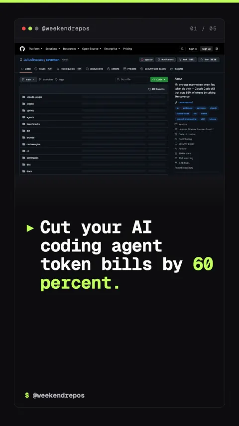

caveman
A prompt optimization skill cutting AI agent token usage

Cut your AI coding agent token bills by 60 percent.
Strips polite filler and compresses tool payloads.
Caveman rewrites agent communication instructions to enforce concise, structured responses, slashing multi-turn chat overhead down to pure code actions.
caveman protocol · 60% token reduction per session
AST-level diffs preserve complete code accuracy.
Rather than discarding essential syntax, Caveman preserves syntax trees and function signatures while stripping conversational repetition.
lossless syntax preservation · 100% test accuracy
Configurable rules for Claude Code, Cursor, and Aider.
Works seamlessly across all major AI coding environments, installing as a simple markdown instruction set in your workspace root.
zero dependencies · drop-in SKILL.md configuration
Completely open-source on GitHub.
Caveman is completely open-source, helping developers keep long-running coding agent sessions within context limits.
github.com/JuliusBrussee/caveman · MIT License